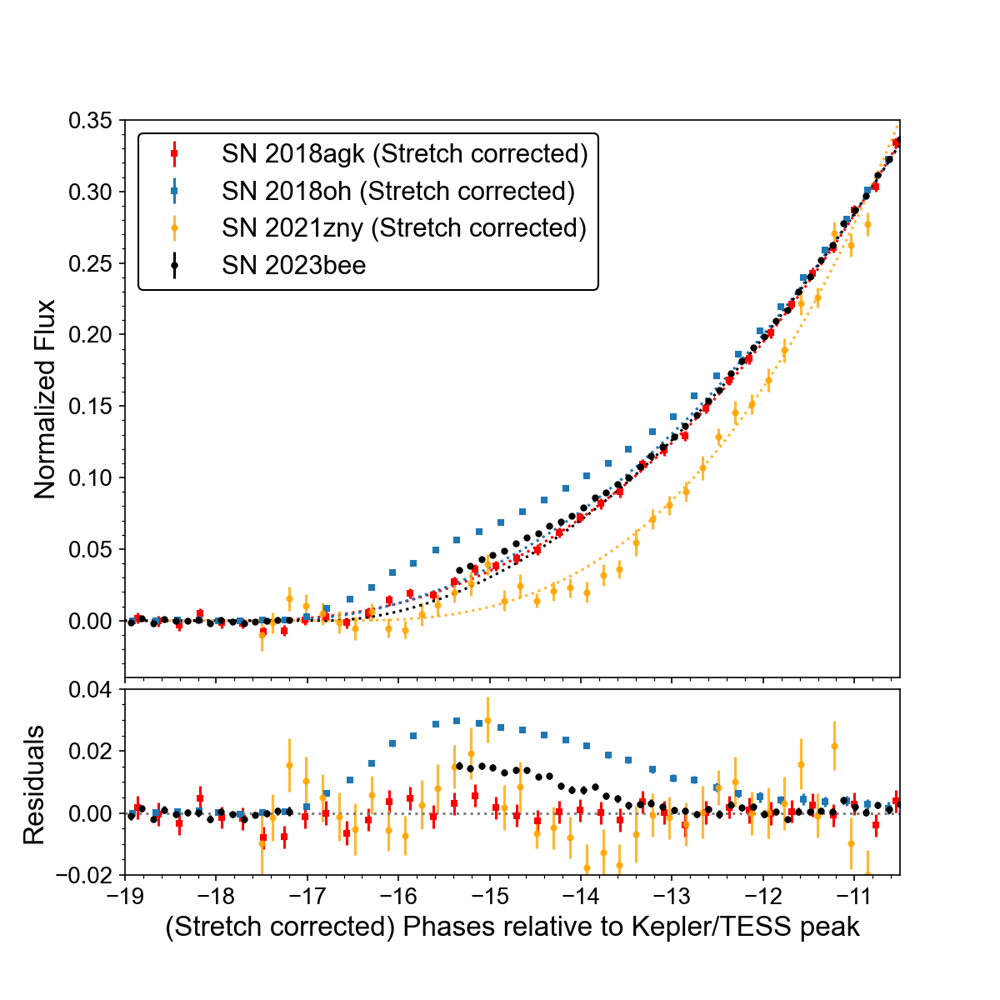
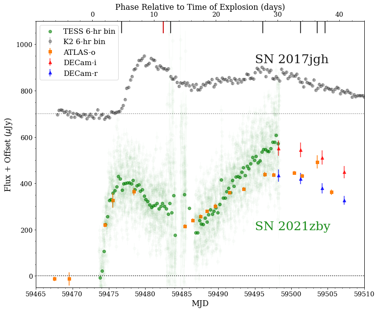
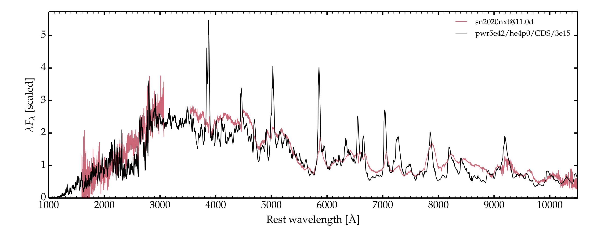
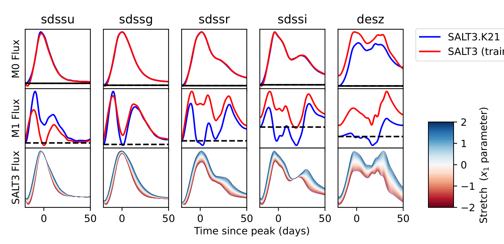

About
I'm a joint TESS & ULTRASAT postdoctoral fellow at the Kavli Institute for Astrophysics and Space Research at MIT and the Weizmann Institute of Science. Before that, I obtained my PhD in Physics and Astronomy from the Johns Hopkins University in 2023 and worked as a postdoc there. My personal research interest focuses on the progenitor and explosion mechanism of extragalactic transients, with a focus on the type Ia supernovae. Specifically, I utilize the high cadence light curves from the exoplanet hunters, i.e. the Kepler and TESS satellites, to study the evolution of these transients on short timescale that contain hint for their progenitor systems.
I was born and grew up in Ningbo, a coastal city in Mainland China. I obtained my Bachelor degree with majors in physics and mathematics from the University of Hong Kong in 2016.
Extragalactic transient studies with Kepler and TESS
Designed for discovering exoplanets, Kepler and TESS telescopes are featured with their continuous high cadence (<30min) photometry and large Field-of-View(FOV). Thus they can serve as an extraordinary probe for fast evolving transients and early fast features. Such features right after the time of explosion can usually be a smoking gun for the progenitor systems of those transients. Through the past few years, my main research intetest is to utilize those exoplanet hunters for various types of transient studies, from the common type Ia supernovae (SNe Ia), core-collapse supernovae (CCSNe), to gamma-ray burst (GRB) afterglows or other exotic events.
Constraining SNe Ia progenitors with early excess with Kepler and TESS

SNe Ia have been playing a critical role as standardizable candles in modern cosmology for decades, directly leading to the discovery of the accelerated cosmological expansion driven by Dark Energy. However, the exact progenitor system(s) and explosion mechanism(s) of SNe Ia are yet unknown. Early signatures such as excess flux can be a smoking gun for particular progenitors or explosion scenarios. They may originate from interaction between the SN ejecta with the non-degenerate companion star or CSM, or a thin shell of radioactive isotopes possibly formed in a surface detonation.
I have been analyzing the early light curves of SNe Ia in Kepler and TESS to constrain their progenitor properties, including SN 2018agk with a smooth power-law rise (2108.13607), and SN 2023bee, the first normal SN~Ia with early excess observed in TESS (2305.03779). In the case of SN 2023bee, no progenitor and explosion model can explain the excess flux over the full wavelength range. The diversity in the early spectra of SNe Ia with excess may also indicate different origins of such features among individual SN Ia. On the statistical level, the TESS SNe Ia sample has an surprisingly low rate of early excess events (1 in >100) compared to the ZTF sample (~10%). Such deviation highlights the necessity of a robust and statistically sound analysis on the early excess detection for future study.
Shock cooling process of CCSNe

A handful of CCSNe have been discovered to have a double-peak light curve, with a prominent early peak that precedes the main radioactive peak. This early peak is believed to come from the cooling of shock-heated ejecta after the SN shock break out from the dense ejecta. I identified the prominent shock cooling of SN 2021zby (2211.03811), the first discovery of such fast evolving feature in TESS SNe sample. The best-fit model indicates its progenitor to be most likely a yellow supergiant with radius ~120-300R⊙. This result is consistent with the progenitor properties of other SNe~IIb inferred from pre-explosion images, and thus proves the validity of SCL analysis.
Interacting SNe spectroscopy

The origin of the dense CSM in some interacting SNe (e.g., SNe Ibn) remains a mystery, in particular their progenitor system and mass-loss mechanism. Recent advances with radiative transfer codes such as CMFGEN have enabled precise spectroscopic modeling of SNe Ibn under different configurations, and highlight the necessity of UV data. Through a complete analysis on the spectroscopic evolution of SN Ibn 2020nxt through UV to NIR, I find the best-fit model is a <1R⊙ helium star that lost its ~1R⊙ He-rich envelope in the years preceding core collapse (2305.05015). Ultimately, I conclude that at least some SNe Ibn originate from low mass stars in binary systems, rather than the single, massive (>30R⊙) Wolf-Rayet-like stars as previously thought.
Extending SNe Ia light curve model into UV reign

Virtually all upcoming cosmological analyses leveraging the several hundred thousand SNe Ia expected from the Vera C. Rubin Observatory and Roman Space Telescope will include the widely used standard SNe Ia light curve fitter, Spectral Adaptive Light-curve Template (SALT3). Unfortunately, SALT3 is very poorly trained in the UV due to a lack of well-calibrated spectra used to constrain UV spectral features. The extremely unreliable result has not been a major barrier due to a relative lack of new rest-frame UV observations, but ~35% of all Roman SNIa observations will fall into the high-z range and include rest-frame UV data. Thus, reliably fitting them will require SALT3 to be robust below 3,500Å.
To resolve this issue, I am leading the re-training effort of the SALT3 model in UV range with a set of 179 consistently reduced HST STIS spectra from 26 nearby SNe Ia, the largest UV spectra sample of SNe Ia to date. With such sample, we expect to extend the lower bound of wavelength of reliable SALT3 model from 3500Å to 1700Å and drastically improve our ability to fit Rubin and Roman data at high-z.
CV
Contact
qnwang12[at]gmail[dot]com